UNJu · Ingeniería
Jujuy Dev presentaCharla en vivo
¿Quién programaa mano hoy?
Franco Durán · Facultad de Ingeniería
Deslizá →
¡Buenas! Soy Franco. Arranco con una pregunta y quiero manos arriba: ¿quién programa a mano hoy?
Guarden la respuesta, que la vamos a retomar.
¿Técnica, práctica o sentimental ? Yo armando esta charla
Cuando armaba esta charla, que es súper importante para mí, no sabía si hablar muy técnico, muy por arriba, más práctico, más teórico, más sentimental…
Estar parado acá, en la facultad donde me gradué, era impensable hace unos meses. Si no fuera por el libre albedrío, los modelos de IA y la orquestación de agentes, no estaría acá.
Quién soy
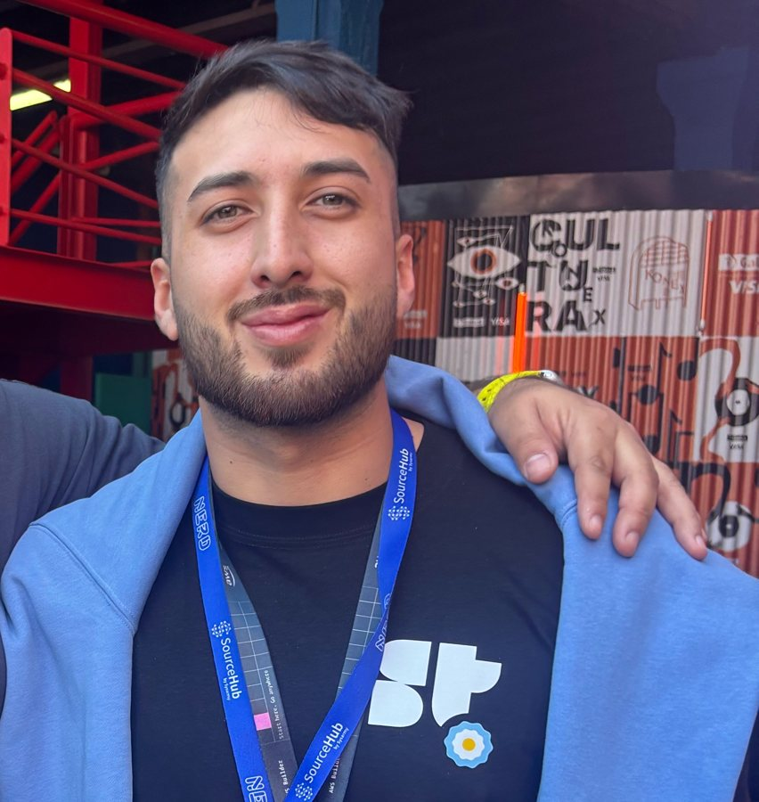
Franco Durán
26 años Jujuy, Argentina
01 Lic. en Tecnologías de la Información 02 Analista Programador Universitario 03 Consultor en automatización de procesos e IA 04 Founder de jujuy.dev · +600 entusiastas tech 05 Embajador de redes blockchain · charlas 06 Host de hackatones web2 y web3 (y gané unas cuantas 🏆)
Soy Franco Durán, tengo 26 años. Licenciado en Tecnologías de la Información y Analista Programador Universitario, acá en la UNJu.
Hoy soy consultor en automatización de procesos e IA en varias empresas.
Soy founder de jujuy.dev, una comunidad de +600 entusiastas tecnológicos donde conectamos y aprendemos.
Soy embajador de redes blockchain, doy charlas, hosteo hackatones web2 y web3… y gané unas cuantas. [Nombrar las marcas de los logos.]
Un proyecto
ColeJUY
Los colectivos de Jujuy, en vivo .
+1500 usuarios/día(ponele)
Open source Municipalidad → pronto toda Jujuy
Uno de los proyectos de los que más orgulloso estoy: ColeJUY. Una web para trackear los colectivos en vivo, para los ciudadanos de la municipalidad y próximamente de toda Jujuy.
Es open source, y la usan más o menos +1500 personas por día, ponele.
Estas semanas fueron una locura
Cowork con Richard Hipp · creador de SQLite Conocí a midudev 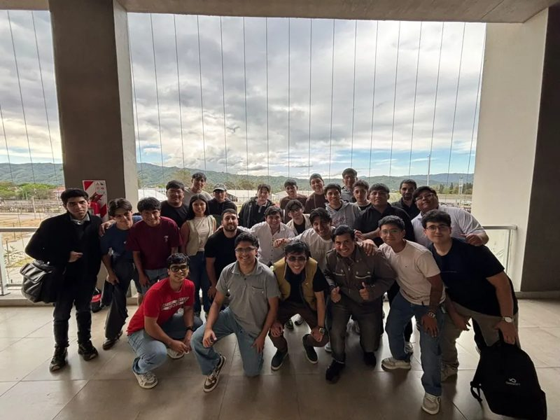
jujuy.dev · #01 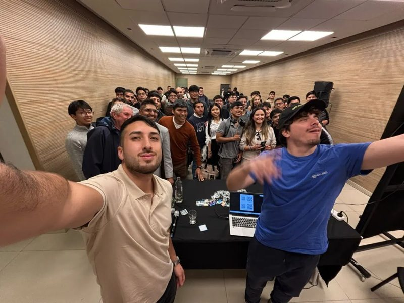
jujuy.dev · #02 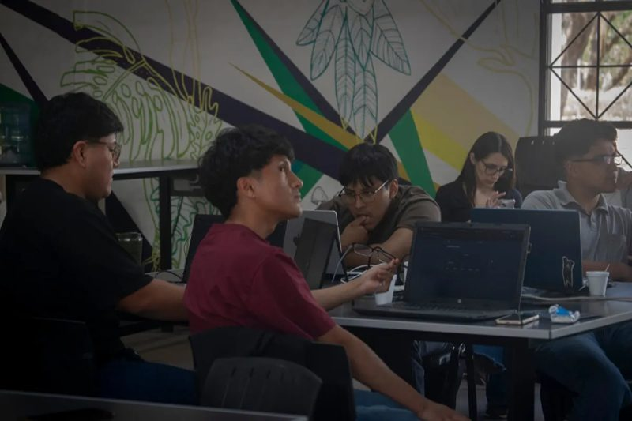
jujuy.dev · #03 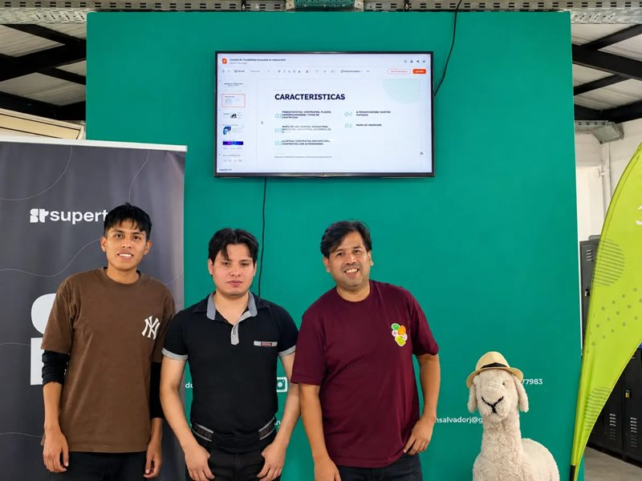
jujuy.dev · #04 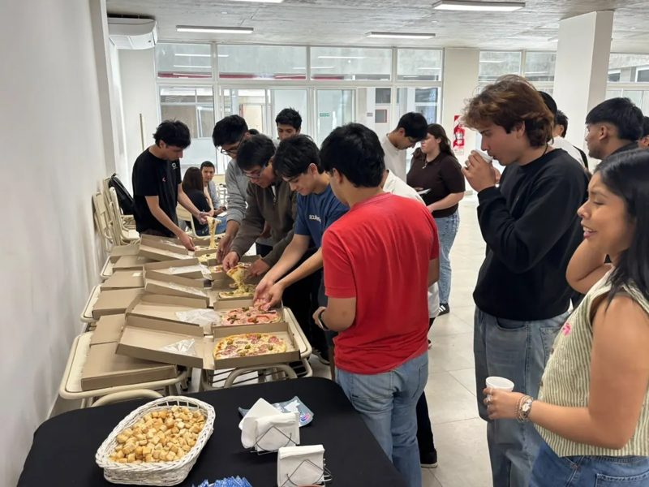
jujuy.dev · #05 Artu Grande Erasmo Hernández Carli Code jujuy.dev · #06 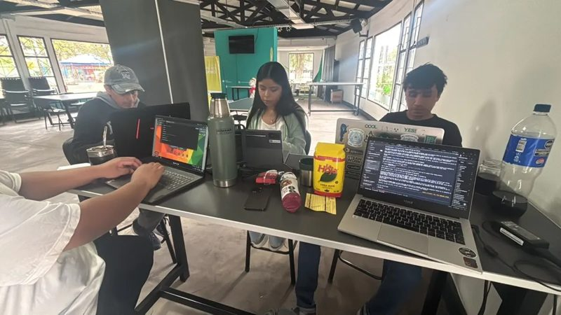
jujuy.dev · #07 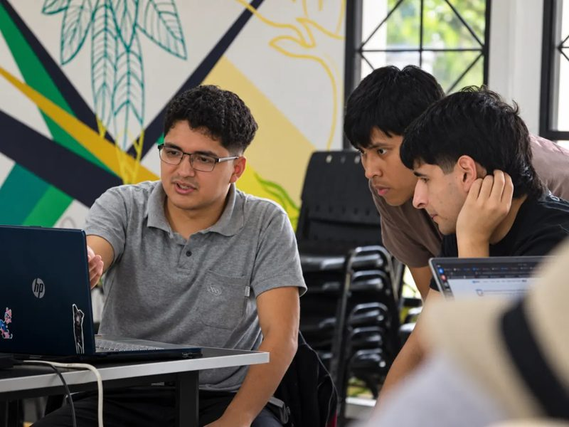
jujuy.dev · #08 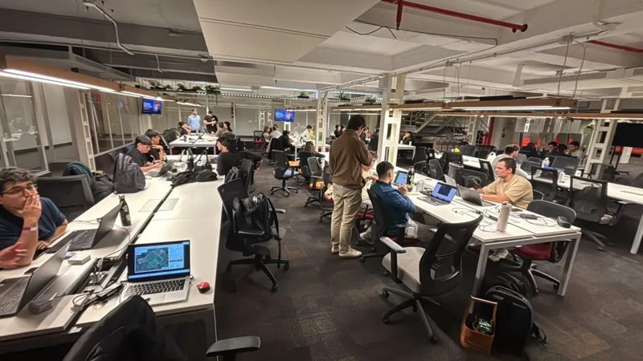
jujuy.dev · #09 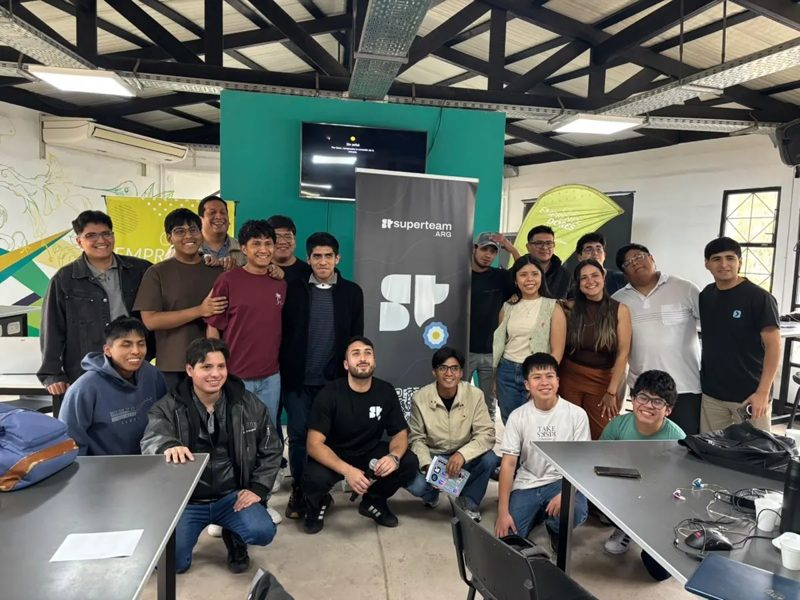
jujuy.dev · #10 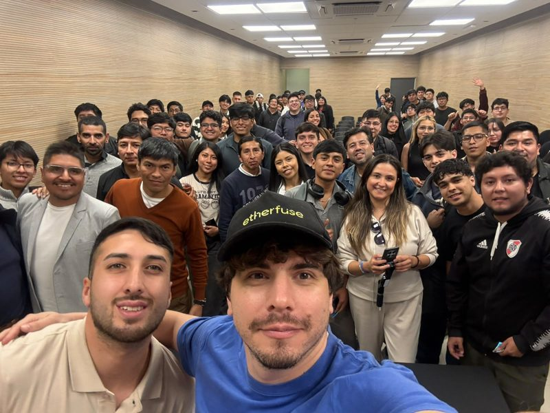
jujuy.dev · #11 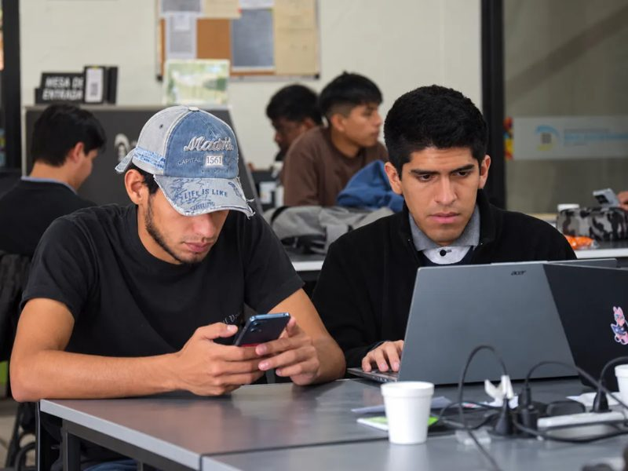
jujuy.dev · #12 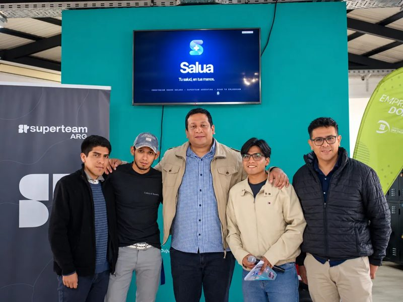
jujuy.dev · #13 Hackatones en simultáneo Coworking con amigos 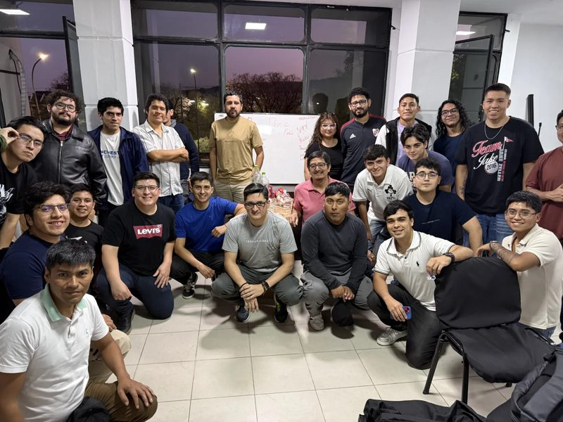
jujuy.dev · #14 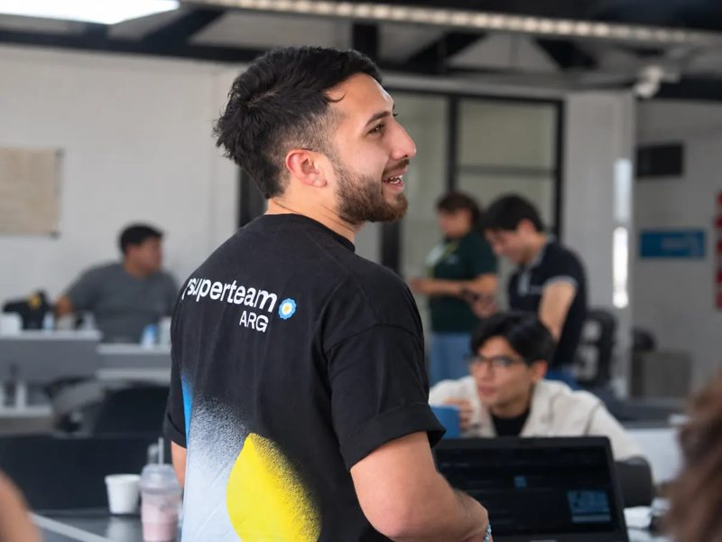
jujuy.dev · #15 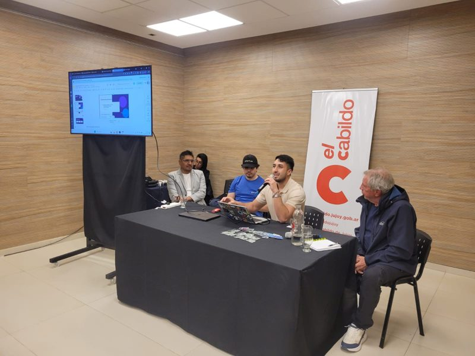
jujuy.dev · #16 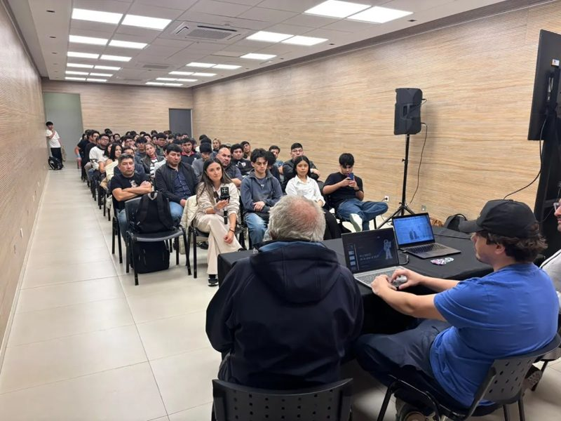
jujuy.dev · #17 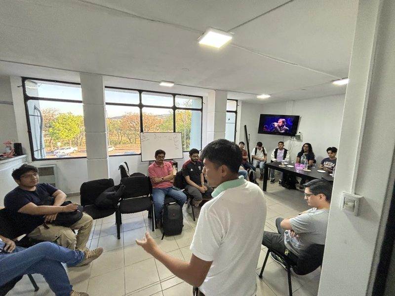
jujuy.dev · #18 jujuy.dev · #19 jujuy.dev · #20 jujuy.dev · #21 jujuy.dev · #22 jujuy.dev · #23 jujuy.dev · #24 jujuy.dev · #25 jujuy.dev · #26 jujuy.dev · #27 jujuy.dev · #28 jujuy.dev · #29 jujuy.dev · #30 Me amenazaron por una app que le solucionaba la vida a la gente
Estas últimas semanas fueron una locura. (Ir apretando → y que exploten las fotos.)
Hice cowork con Richard Hipp, el creador de SQLite. Conocí a midudev. Compartí con amigos que son líderes tech: Artu Grande, Erasmo Hernández, Carli Code.
Más laburo de automatización, reuniones, coworking con amigos, hackatones, eventos y hackatones en simultáneo, redes…
Y sí: me amenazaron de muerte por hacer una app que le solucionaba la vida a la gente. (Decirlo con calma: pasó, lo cuento, y seguimos.)
Plot twist
Todo esto fue orquestando agentes
(aunque no me crean jaja)
Los eventos los movieron agentes:
Publicación Conversión Sponsors Venue Catering
Plot twist: todo esto fue gracias a orquestar agentes. Aunque no me crean, jaja.
Los eventos de la comunidad fueron automatizados por agentes: la publicación, la conversión, los sponsors, el venue… ¡hasta el catering!
¿Quién programaa mano ? Yo hace casi 1 año que no programo a mano.
Yo cuando me piden escribir un for a mano Vuelvo a la pregunta del principio: ¿quién programa hoy a mano? …
Yo hace casi un año que no programo a mano.
Las pantallas compartidas Hace 5 meses, en el laburo…
6
Agentes en paralelo · orquestación
👈 yo …pero ninguno trabajaba como yo.
Hace 5 meses, en el laburo, mis compañeros compartían pantalla.
Uno le preguntaba a la IA y copiaba y pegaba. Otro usaba un CLI. Otros, prompts larguísimos. Algunos ya usaban skills o AGENTS.md…
Pero ninguno trabajaba como yo: agentes en paralelo, orquestados.
Las 5 etapas del duelo con la IA
01 Negación02 Miedo03 Posts en contra04 …05 ¡Pum! Esperanza
Mi timeline El post que lo cambió todo Las 5 etapas del duelo con la IA. Mis compañeros, varios de +40, vivieron esto: la IA estaba mal vista.
Negación. Miedo, el miedo del programador viejo. Ver posts en contra todo el tiempo…
Y de golpe, pum: un post que daba esperanza. [Contar el post — el de “cielo” / Martín.]
Yo esto lo viví 5 meses antes que ellos.
La puerta de entrada: hackatones
🏁 Hackatones
↳ 🤖 Programar con IA
↳ 👀 Seguir a los que ganaban
↳ 🌉 Rondas + su empresa en San Francisco
Desde Argentina, LATAM o cualquier país .
Ahí me metí en la ingeniería de agentes de IA .
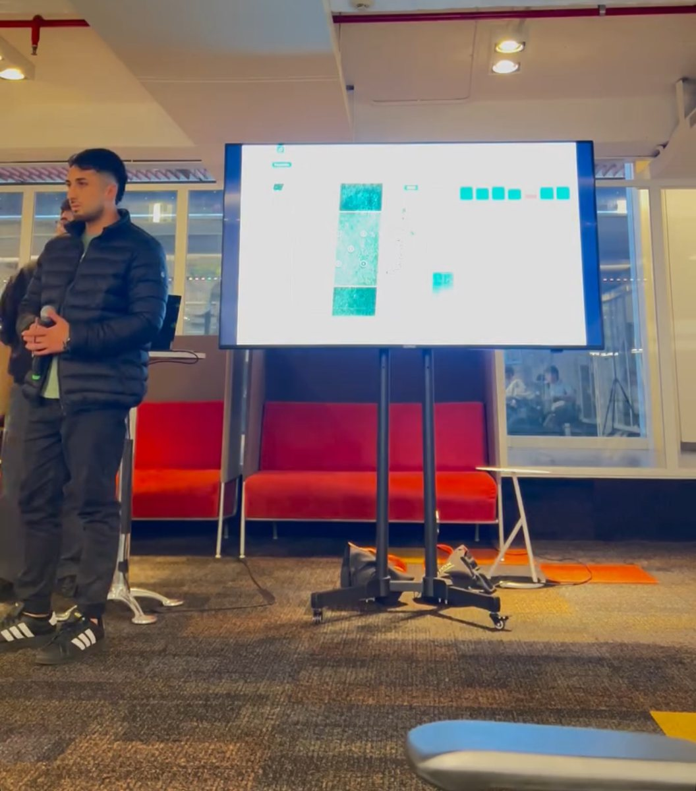
La puerta de entrada fueron las hackatones. Programar con IA, y seguir a la gente que ganaba hackatones, levantaba rondas y armaba su empresa en San Francisco… desde Argentina, desde LATAM, desde cualquier país.
Ahí me perfeccioné y me metí en la ingeniería de agentes de IA.
¿Quién de ustedesIDE ? Bueno… yo uso un
ADE: Orca
Mis compañeros cuando saqué el ADE ¿Quién de ustedes usa un IDE? (manos) Bueno… yo uso un ADE: Orca.
La cara de mis compañeros cuando saqué el ADE… me moría de vergüenza. Ese día hablaron muy mal de la gente que usa IA. Sentí que vivía en un mundo de mentira, aunque era quien más PRs hacía y quien más tickets creaba y resolvía.
Tranquis: esto tiene final feliz, ya lo cuento.
Agentes · 1/5
Un modelo no es un agente Un modelo responde una vez. Un agente actúa, observa y vuelve a empezar.
Modelo
Agente
Observay vuelve a empezar
Modelo = motor. Agente = modelo + herramientas + contexto + loop.
Basado en la charla de Facu Padilla · charla.facundopadilla.com/orca
Primera distinción, la más importante: un modelo no es un agente.
Un modelo recibe un prompt y produce una respuesta. Y listo.
Un agente agrega un loop: tiene un objetivo, lee el contexto, usa herramientas, ejecuta acciones, observa qué pasó… y con eso decide qué hacer después.
Modelo = motor de inferencia. Agente = motor + herramientas + contexto + loop de acción.
(Basado en la charla de Facu Padilla.)
Agentes · 2/5
El modelo es el cerebro .
El harness es el sistema que lo pone a trabajar.
el cerebro
+ Herramientasqué puede usar
+ Contextoqué recibe
+ Permisosqué puede tocar
+ Loopcómo sigue
+ Estadoqué recuerda
= Harnessel entorno donde la inferencia se vuelve trabajo
Gracias, Jev 🙌
Basado en la charla de Facu Padilla · charla.facundopadilla.com/orca
Ahora una palabra que van a escuchar cada vez más: harness.
El modelo hace la inferencia: es el cerebro. El harness construye el entorno donde esa inferencia se convierte en trabajo: qué herramientas puede usar, qué contexto recibe, qué permisos tiene, cómo continúa el loop, qué estado mantiene, qué pasa cuando falla.
[Mencionar brevemente los modelos que usás hoy: completar.]
Y no me puedo olvidar de Jev. [Completar: por qué Jev.]
(Basado en la charla de Facu Padilla.)
Agentes · 3/5
Orquestar es coordinar trabajo No es:
“tener muchos agentes.”
Es:
UX/UI Backend Tests Review decidir quién hace qué, cuándo y cómo se integra.
Más agentes = más productividad
Basado en la charla de Facu Padilla · charla.facundopadilla.com/orca
¿Qué es orquestar? No es abrir diez terminales. No es lanzar diez modelos.
Orquestar es coordinar trabajo: quién hace qué, qué puede ir en paralelo, qué depende de qué, quién espera a quién, quién revisa, quién integra y qué hacemos cuando algo falla.
Ejemplo: quiero construir una landing → UX/UI, backend y tests en paralelo → review → merge.
Y ojo: más agentes no es más productividad. No hace falta orquestar todo.
(Basado en la charla de Facu Padilla.)
Agentes · 4/5
Un agente, un espacio de trabajo git worktrees: el mismo repo, varios directorios de trabajo separados.
¿Y si trabajan sobre lo mismo?
Abrimos en paralelo, después juntamos.
Basado en la charla de Facu Padilla · charla.facundopadilla.com/orca
El primer problema aparece cuando todos trabajan sobre el mismo checkout: un agente cambia una cosa, otro otra, el tercero hace un refactor… y de golpe: conflictos y poca idea de quién hizo qué.
La solución es aislamiento. Git tiene una herramienta que encaja perfecto: git worktrees. El mismo repo, varios directorios de trabajo separados. El agente A trabaja en A, el B en B, el C en C. No se pisan.
Patrón fan-out / fan-in: abrimos el trabajo en paralelo y después juntamos. Y review loop: no asumimos que la primera salida está bien; si falla, volvemos.
(Basado en la charla de Facu Padilla.)
Agentes · 5/5
ADE
Orca
Agent Development Environment: un entorno para trabajar con una flota de agentes.
Worker Un agente ejecutando una tarea concreta, en su propio worktree.
Antes:
terminal branch terminal browser notes branch terminal worktree notes ¿cuál era cuál?
ORCA
A🤖 worker
B🤖 worker
C🤖 worker
D🤖 worker
Basado en la charla de Facu Padilla · charla.facundopadilla.com/orca
Y ahí aparece Orca, el ADE que les mostré. Se presenta como un Agent Development Environment: un entorno para trabajar con una flota de agentes. No reemplaza al modelo: es el entorno alrededor de los agentes — worktrees, terminales, navegador, revisión, tareas.
Antes: terminales por todos lados, branches, worktrees, browsers, notas… y encima recordar quién estaba haciendo qué. ¿Cuál era cuál?
Orca lo convierte en un solo lugar donde ves los agentes, sus entornos y su trabajo. Cada worker es un agente ejecutando una tarea concreta.
(Según la charla de Facu: lo desarrolla Stably, es gratuito y open source, MIT. Basado en charla.facundopadilla.com/orca.)
Final feliz
“ Franco, tenés razón. Estamos trabajando mal. Gracias por abrirnos la cabeza. ” Mi team leader , al otro día (y cayó con Herd)
¿Se acuerdan que les dije que tenía final feliz? Al otro día, el team leader cayó con Herd y me dijo:
“Franco, tenés razón, estamos trabajando mal. Gracias por abrirnos la cabeza.”
Vivía en una burbuja de Twitter: gente muy avanzada y cosas nuevas cada semana .
Aprendizaje
Comunicar y transmitir esto es súper importante.
Yo cada lunes con una herramienta nueva El FOMO me hizo la casa. Vivía en una burbuja de Twitter con gente muy avanzada, y cada semana salía algo nuevo.
Aprendizaje: comunicar y transmitir esto es súper importante. Si no lo contás, te quedás solo en tu burbuja.
Salí a buscar más gente como yo Me animaron a crear la primera comunidad tech con eventos de la provincia.
Franco
ST Superteam Brasil
Superteam Argentina
SaltaDev
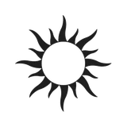
CrecimientoAR
Mar del Plata Dev
Carli Code
Erasmo Hernández
midudev
Artu Grande
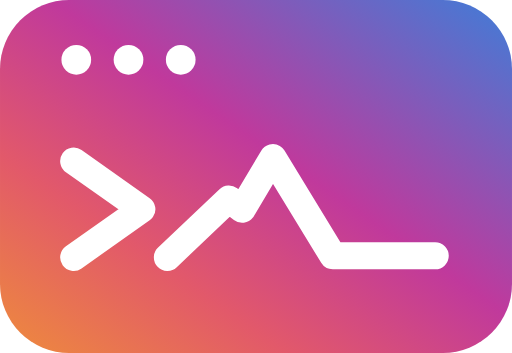
Nace jujuy.dev · +600
Entonces salí a buscar más gente como yo: Superteam Brasil, Superteam Argentina… y las comunidades hermanas de todo el país: SaltaDev, CuyoConnect, CrecimientoAR, Nerdearla, Formosa.dev, Mar del Plata Dev.
Conecté con gente como midudev, Artu Grande, Erasmo Hernández, Carli Code.
Y me animaron a crear la primera comunidad tech con eventos de la provincia. Había una antes, estuve 4 años, pero nunca organizaban eventos. Así nació jujuy.dev.
Se desbloquea algo nuevo
Agentes corriendo 24/7 .
PD: Ben, si me estás viendo: pronto espero ser ambassador de SpaceX 🚀
Grok Bot ~2 meses en el mercado
📅 Eventos de la comunidad 🤝 Conseguir contactos 🎤 Armar esta presentación 🥊 Pelearme con empresas 💜 Conectar con gente hermosa
Yo vs. las empresas (con refuerzos) Y acá se desbloquea algo nuevo: agentes corriendo 24/7. No es el futuro, ya es el presente.
[Grok Bot es... completar]
Grok Bot lleva unos 2 meses en el mercado y ya es parte de mi rutina. Me permitió hacer los eventos de la comunidad, conseguir contactos, armar esta presentación, pelearme con empresas y conectar con gente hermosa.
Ben, si me estás viendo: pronto espero ser ambassador de SpaceX. 😄
Delegar lo automático para vivir lo real ¿Para qué todo esto? Para delegar lo automático y vivir lo real.
Un café con amigos. Un mate con los abuelos. Venir a explicar esto acá. Y estudiar más el producto y el problema.
El problema nunca fue el código .
Siempre fue arreglar un problema con software. Usemos la IA como herramienta para ser más productivos.
Innovar y ser atrevidos va a incomodar. Animate a instalar algo nuevo.
¡Gracias!
Franco Durán jujuy .dev
El problema nunca fue el código. Lo que hacemos con código siempre fue arreglar un problema con software.
Usemos la IA como una herramienta que nos hace más productivos.
Innovar y ser atrevidos va a incomodar. Vas a pasar por estas cosas. Animate a instalar algo nuevo.
¡Gracias! Soy Franco Durán, de jujuy.dev.


 Yo armando esta charla
Yo armando esta charla


 Yo cuando me piden escribir un for a mano
Yo cuando me piden escribir un for a mano Mi timeline
Mi timeline El post que lo cambió todo
El post que lo cambió todo Mis compañeros cuando saqué el ADE
Mis compañeros cuando saqué el ADE Yo cada lunes con una herramienta nueva
Yo cada lunes con una herramienta nueva SaltaDev
SaltaDev Yo vs. las empresas (con refuerzos)
Yo vs. las empresas (con refuerzos) ☕ Un café con amigos
☕ Un café con amigos 🧉 Un mate con los abuelos
🧉 Un mate con los abuelos 📚 Estudiar el producto y el problema
📚 Estudiar el producto y el problema